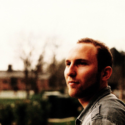

Home
Assistant Professor
University of Maryland, College Park
Email: leonidas at
umd.eduCV
umd.eduStarting July 1st 2020, I'm an assistant professor at the University of Maryland, College Park and a proud member of the PLUM lab. My research uses programming language abstractions to make it easier to write, debug, and reason about software and their specifications, with a particular focus on random testing, formal verification, and their interplay.
I was a joint PostDoc between the University of Maryland, College Park, under the advice of Mike Hicks, and the University of Pennsylvania, under Benjamin Pierce, as a Victor Basilic Postdoctoral fellow. Ask me about it if you're considering a joint PostDoc, it's an interesting experience!
I defended my PhD at UPenn in May 2018, fortunate to be advised by Benjamin Pierce, on Random Testing for Language Design. During my PhD I did an internship at Microsoft Research Cambridge under Dimitrios Vytiniotis and Aditya Nori, working on generating adversarial counterexamples for deep convolutional neural networks. My undergrad was at the School of Electrical and Computer Engineering at the National Technical University of Athens where I worked with Prof. Kostis Sagonas on a tool for automated random testing of Web Services.